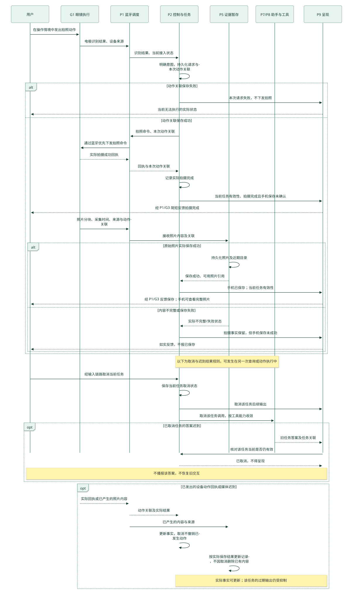
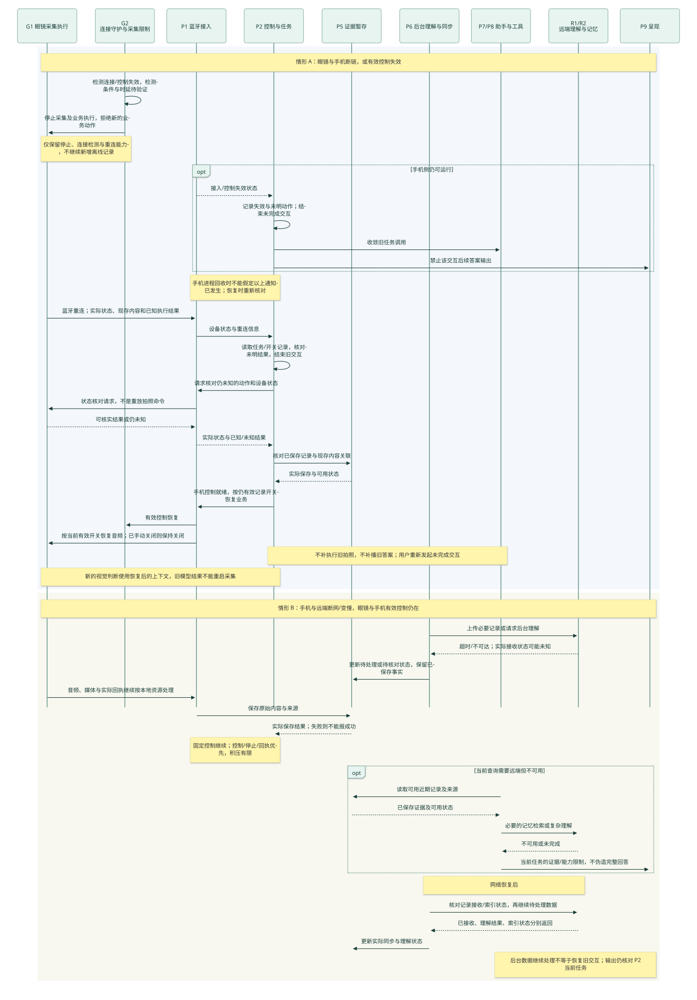

EyeX 智能眼镜：模块级架构设计
版本：2026-11-01 · 审阅稿 v1。关联决策：架构验收与演进边界。
本稿把已确认的技术路线展开为模块级设计。用户已确认设计深度与图的组合；本稿的模块细化仍待整体走读，未表示实机、手机运行时或性能已验证。
阅读顺序
- 本页：模块架构总图——看部署、职责和主要依赖。
- 模块说明与接口约束——看每个模块的输入输出、触发、状态和失败责任。
- 三条主线与关键时序——看数据如何处理和保存，以及执行、反馈、取消与恢复的顺序。
- 本页后半：技术路线、扩展走查与验证安排——区分已经选择的方向和需要原型回答的问题。
图中的模块是逻辑职责，不要求各自运行在独立进程。模块编号在各页保持一致。泳道以运行位置划分，手机内部再标出负责处理的模块；这是一套工程数据流表达，不宣称采用严格的 BPMN 或传统 DFD 符号标准。
设计范围与依据
本版具体到：部署位置、职责、主要输入输出、触发方式、持有状态、失败责任、技术方向和扩展接入点。函数签名、完整字段、通信协议、数据库实现、精确时限和性能阈值留到原型细化。
三条展示主线继续是电极无手拍照、音频记忆与找物、主动标记与立即问回。近眼显示为主要简短反馈，声音辅助，手机呈现完整内容；四鼻梁电极的具体信号算法、动作映射和显示硬件能力仍依赖设备验证。
| 标记 | 含义 |
|---|---|
| 已决路线 | 前置决策票已确认的方向，本稿沿用 |
| 本稿细化 | 为使路线可实现而提出的模块拆分和接口语义，等待本票整体走读 |
| 待验证 | 尚未取得真机或运行证据的条件，不视作产品保证 |
前置依据：跨端分工与音频主线、DSH 主选与 Koog 备选、主流程与断链恢复。本稿细化若与前置决议出现冲突，应显式复核相应决议，不能靠绘图悄然变更。
模块架构总图
实线表示主要数据、请求或结果；虚线表示设备控制、停止约束或反馈下发。双向线包含请求与返回。该图保留主要依赖，完整载荷和先后关系见主线图与时序图。

三条主要执行路径
- 固定控制路径：G1 → P1 → P2 → G1/G3。明确拍照、停止和操作反馈由固定程序处理，不等待远端推理，也不逐次经过 DSH。拍照命令与照片保存是两个不同阶段。
- 持续记录路径：G1 → P1 → P3/P5 → P6 → R1/R2。接收和保存原始内容与转写可并行推进；转写/理解失败不能伪装成原始内容未曾采集，未保存的内容不能报告已保存。后台处理可延后，积压必须有界。
- 按需助手路径：P2 → P7 ↔ P8 → P5/R2/R1。P7 组织会话和推理，P8 将产品能力接入为工具；设备副作用回到 P2，答案通过 P9 检查当前任务后呈现。记录流不逐包进入助手循环。
视觉增强是记录路径上的可选分支：P3 → P4 → P2 → G1。P4 只能提出有限的采集建议，P2 和 G2 落实用户开关、当前状态与采集限制。视觉缺失不阻断音频记忆；听懂后开相机不能取得开启前的画面。
两段连接与控制就绪
眼镜—手机与手机—远端分别管理。前一段失效时眼镜停止业务；后一段失效而手机控制仍有效时，本地固定控制和可靠暂存仍可按实际资源运行，远端理解及记忆访问受限。
“蓝牙已连接”只说明链路情况，不能单独证明手机控制就绪。恢复需核对设备状态、现有内容与未明动作结果，再按仍有效的用户记录开关恢复；不补执行旧命令、不补播旧答案。手机进程回收如何被固件识别、实际停止时延和宿主恢复条件均为待验证项。
技术路线与可替换位置
| 范围 | 已决路线／首测方向 | 替换位置与成立条件 |
|---|---|---|
| 眼镜与手机连接 | 蓝牙；P1 统一调度控制、回执、音频和媒体 | 具体承载/profile 随硬件与双平台验证；不将“支持蓝牙”等同于全部音频/媒体通道可用 |
| 音频编码 | Opus 为首测候选，避免默认全天传未压缩 PCM | G1 编码与 P1/P3 解码适配；同负载比较识别质量、编码耗电和无线耗电 |
| 流式转写 | 手机本地中文 ASR 优先；sherpa-onnx 与小型流式模型是验证起点 | P3 的转写接口保持来源与时间语义；本地热耗/准确率/后台条件不成立时比较混合或远端方案 |
| 采集判断 | 及时判断优先本地，规则基线先测闭环，轻量模型可替换；Jev 为对照或复杂语义辅助候选 | P4 输出有限建议；不把模型文本直接当硬件执行命令，不锁定训练方案或具体秒数 |
| 助手框架 | 手机 DSH 主选，Koog 备选 | P7 与 P8 接口；锁定版本、插件、手机宿主与真实持久化后端后验证。切换框架不能自动把主控迁到远端 |
| 复杂理解 | R1 经模型 API 提供语义/视觉理解；提供方未选定 | P7/P8/P6 分别保留交互推理、按需补充与后台理解的调用责任，共用适配实现可在原型中决定 |
| 证据与记忆 | P5 手机可靠暂存/近期目录，R2 独立长期记忆优先远端部署 | 数据库、远端存储与迁移比例未锁定；本地保存、远端接收、理解/索引分别记录 |
| 呈现 | P9 生成当前任务的简短内容交 G3；手机保留完整内容 | 近眼显示、声音和手机呈现按能力适配；具体渲染与电极动作映射留设备原型 |
以上候选沿用已有调查与决议，未在本稿重新进行软件版本或硬件性能验证。Android 先贯通，同时验证 iOS 的限制；具体 Node/WebWorker 等手机宿主路径仍待原型选择。
扩展走查
以下两例只检查架构接入方式，不新增首版功能。
| 示例 | 新增／修改 | 复用 | 资源与语义检查 |
|---|---|---|---|
| 主动标记时附带可用手机位置 | 手机定位输入适配；把位置及其来源、取得时间和精度交 P5，P2 负责与标记关联 | P5 近期目录、P6 同步、P8 查询、P9 呈现 | 定位不可用不能阻止原始标记保存；只表示当时手机位置，不证明物品位置。按需定位，测等待与手机耗电，不增加眼镜硬件承诺 |
| 翻译刚才那句话 | P8 增加翻译工具及必要的 R1 调用适配 | P3 转写、P5 近期记录、P7 助手、P9/G3 呈现 | 无需新增持续摄像；测推理排队与调用成本，取消后禁止迟到答案输出，来源/可用性限制仍保留 |
若新增的是设备动作，接入 P2 和 G1 的执行能力，再由 P8 按需暴露给助手；沿用实际回执、未知结果核对和 P9 呈现。扩展优先局限在对应模块，不预先建设通用插件平台或多 Agent 编排系统。
原型验证安排
下表是本稿提出的推进顺序和观察依据，不是已通过的验收结果。具体设备、时长与数值阈值在运行前结合设备预算确定；先记录完整链路基线，不用单次模型推理速度替代端到端表现。
| 阶段 | 代表检查 | 必须留下的证据与路线复核条件 |
|---|---|---|
| 1. 手机与设备底座 | 固定 DSH 版本/插件/宿主，跑最小模型—工具循环；P1/P2/G1 命令与回执；P5 保存及进程终止/重启；同步探查 iOS | 分开记录模拟设备与真机结果；证明真实持久化及原生桥接可行。若需要长期大改 DSH 核心或重兼容层，按相同条件评估 Koog；宿主迁移需重开前置决策 |
| 2. 三条展示闭环 | 无手拍照、只有音频的找物与视觉补充、主动标记后立即问回；插入保存失败、未上传/未索引、取消和迟到回执 | 拍摄与保存不混淆，保存失败不报成功；近期记录可发现；答案保留来源、时间和不确定性；取消不重放副作用。无法成立时定位对应模块复核 |
| 3. 并发与平台条件 | 持续音频/ASR 叠加媒体；Android/iOS 前台、后台、锁屏与回收；眼镜断链、手机断网、远端变慢与恢复 | 端到端 p50/p95、队列/积压趋势、媒体完成情况、取消与停止收敛；分别记录眼镜/手机耗电、温升和持续降速。持续过载或关键后台约束不成立时复核采集/传输/部署路线 |
| 4. 视觉增强收益 | 同负载比较本地转写与混合/远端转写、规则/轻量判断与候选模型，固定编码和无线条件 | 从足够表达目标的话语时刻测到首张可用画面；记录误开、漏开、无用录制时长与实际补证收益。收益不足时调整 P3/P4 的实现，不擅自扩大持续摄像范围 |
两个恢复测试必须分开：眼镜断链后验证停工与重连控制就绪；手机断网时验证本地保存与远端工作延后。存储满后的具体降载策略、媒体缓存清退和数值参数仍需原型比较，不能视作本稿已经逐项定案。
本版审阅关注点
- 模块职责是否足够清楚：尤其是 P2 产品任务、P5 证据、P7 会话、R2 长期记忆各自拥有的状态。
- 三条展示主线是否能逐步对应到具体模块、数据落点和实际反馈。
- 接口约束是否保留已定行为：断链停工、有限资源、近期可发现、如实表达保存/来源，以及取消后输出控制。
- 待验证条件是否有承接位置；若仍有改变主路线的问题，应在当前票继续明确或产生具体后续决策票。
用户本轮“可以”确认的是模块级设计深度和图型组合，不提前计作本版成稿验收。当前票保持开放，完整决定仍记录在对应票的最终决议中。
模块职责与接口约束
状态：模块级架构设计稿，供审阅。模块编号用于跨图定位，不代表独立进程、代码包或新增领域术语。
本稿沿用已确认的手机主控、音频主记忆、视觉按需增强、DSH 主选与 Koog 备选，以及断链停止和实际结果反馈原则。以下将这些原则分配到具体模块；模块内部状态的组织、调度和接口细化属于本稿建议，尚未表示代码已经实现或通过实机验证。
状态的读法：“持久”表示需要跨进程重启保留的事实或记录；“运行时”表示恢复时需要重新建立、核对的活动状态。写出持久责任不等于选定数据库，也不保证断电、进程终止和并发写入已经验证。
眼镜端
G1 · 眼镜输入识别与采集执行
- **部署与职责：**眼镜固件。识别电极动作，执行拍照、音频及按需视觉采集、停止，生成实际执行回执；在 G2 允许的有效控制条件内工作。
- **输入 → 输出：**电极信号、P2 经 P1 下发的受控命令 → 动作识别结果、执行结果、带采集时间和来源的音频/照片/短片。电极结果由 P2 结合操作情境解释，不能直接等同用户授权。
- **触发与状态：**电极输入、当前有效记录开关、明确采集命令。运行时拥有采集状态、当前动作关联和正常连接期间的有限传输缓存；断链前现有内容的可报告范围与掉电保留能力须按固件验证，不把缓存当作断链离线录制能力。
- **失败责任与技术方向：**报告采集失败、媒体不完整或结果未知；不自行重放旧拍照。蓝牙承载及相机/音频接口待设备验证；Opus 为音频编码首测候选，编码耗电、音质和固件适配仍需比较。G2 检测失效后停止新增采集与业务执行。
G2 · 连接守护与采集限制
- **部署与职责：**眼镜固件。保证手动停止、最长采集时限及控制失效停止，不依赖远端模型完成这些限制。
- **输入 → 输出：**连接与控制有效性证据、手动停止、采集开始/继续请求及限制 → G1 的允许/停止约束、实际停止与当前设备状态报告。
- **触发与状态：**连接变化、守护检查、手动停止、采集时限到达。运行时拥有控制有效性、限制计时和设备停止状态；重连时重新核对。手机记录开关的持久责任放在 P2，不以 G2 的连接状态替代用户意图。
- **失败责任与技术方向：**有效控制失效时停止业务，保留检测和重连所需能力；蓝牙连接存在不等于手机控制就绪。检测方法、超时参数、手机进程被回收后的可检测性和停止时延待双平台与固件联合验证，不预设瞬时发现故障。
G3 · 近眼与声音呈现
- **部署与职责：**眼镜固件及显示/音频驱动。执行 P9 给出的当前任务简短呈现，近眼显示为主、声音辅助。
- **输入 → 输出：**经 P1 传来的显示内容、提示请求及输出有效性控制 → 实际显示/声音输出；驱动可取得的执行或失败状态返回手机。
- **触发与状态：**有效呈现请求或清除/停止请求。运行时拥有当前呈现内容和播放状态；不保存任务成功事实，也不作为记忆存储。
- **失败责任与技术方向：**显示失败不能改变已经拍摄或保存的事实；驱动故障交 P9 如实表达可用反馈。断链不补播旧答案，重连后只接受当前有效输出。实际显示、声音接口与可观测回执能力待硬件验证，不以“已下发”声称用户已看到。
手机端
P1 · 蓝牙接入与调度
- **部署与职责：**Android/iOS 原生接入。管理眼镜链路、传输路由与有限队列；让控制、停止和回执优先，音频及时处理，较大媒体分块、可暂停且积压有上限。
- **输入 → 输出：**G1/G2/G3 的设备消息与媒体、P2/P9 的命令与呈现 → P2 的识别结果/实际回执/链路状态、P3 的音频、P5 的原始内容，以及眼镜端执行请求。
- **触发与状态：**连接事件、接收数据及发送请求。运行时拥有链路、传输进度和队列；需要跨重启保留的证据、任务与同步事实分别交 P5/P2/P6，链路连接标志不能替代它们。
- **失败责任与技术方向：**报告断链、传输不完整、队列压力及可用设备状态；不会把排队成功当作执行成功。本稿建议传输重试按内容/片段关联处理，设备动作重发必须由 P2 决定。具体蓝牙承载、profile 和双平台后台能力待验证，不引入已排除的 Wi-Fi 媒体链路。
P2 · 固定控制与产品任务
- **部署与职责：**手机本地控制模块。结合操作情境处理电极和明确语音请求，执行拍照、标记保存、停止、取消及重连恢复；明确操作不等待远端大模型规划。
- **输入 → 输出：**P1 的识别/实际回执、P3 的用户请求、P4 的采集建议、P8 的动作调用、P5 的保存结果 → 经 P1 下发的有效命令、P5 保存请求、P7 查询/取消、P9 的实际状态和输出有效性；向 P3 提供操作/唤起情境，向 P4 提供当前记录开关、控制与采集状态。
- **触发与状态：**用户明确操作、有效采集建议、实际回执、保存结果或连接变化。持久责任包括请求与动作关联、已知/未知结果、已结束/取消事实及仍有效的记录开关；当前控制就绪与操作情境为运行时状态，恢复时需核对后建立。
- **失败责任与技术方向：**新动作关联保存失败时不继续下发；结果不明先核对设备，不能盲目重放。重连后结束旧交互、不补旧命令与答案，音频遵循仍有效的开关。本稿建议手动停止和失效停止不被一般记录失败阻塞，停止事实随后尽可能补记；具体持久化方式及原生宿主待原型选择。
P3 · 流式转写与请求识别
- **部署与职责：**手机本地优先。解码音频并增量转写，区分环境音频上下文与明确唤起后的用户请求。
- **输入 → 输出：**P1 音频及采集关联、P2 的操作/唤起情境 → P5 的带来源转写、P4 的近期话语上下文、P2 的请求或歧义信息。环境中同样一句话不能自动成为工具操作授权。
- **触发与状态：**新音频与有效交互情境。运行时拥有转写会话、增量假设和短期上下文；需要保留的文字与来源写入 P5，不能只存在识别器缓存中。
- **失败责任与技术方向：**识别不清保留不确定性，明确请求有歧义交 P2 澄清，不伪造完整转写。本地流式中文 ASR 为主选验证路线，sherpa-onnx 与小型中文流式模型为起点；手机热耗、准确率或后台限制不适合时，比较混合/远端转写并复核触发时延与联网条件。
P4 · 采集决策
- **部署与职责：**手机及时判断优先。根据近期音频上下文、已有证据和采集状态，判断是否需要视觉增强；只产生有限采集建议。
- **输入 → 输出：**P3 近期上下文、P2 当前开关与状态、P5 必要证据摘要 → 不采集/开始/继续/停止建议及相关依据、建议长度，交 P2 再检查当前有效性。
- **触发与状态：**新相关上下文、有限片段结束或需复评的采集状态变化。运行时拥有当前判断上下文与尚未采用的建议，不拥有设备动作事实，也不自行维护另一套记录开关。
- **失败责任与技术方向：**迟到建议不能越过 P2/G2 当前关闭、结束或失效状态；判断失败不妨碍手动停止，也不使已有音频记忆无效。规则基线先测闭环，轻量模型可替换；Jev 是对照或复杂语义辅助候选，尚未锁定模型、训练计划或秒数。
P5 · 可靠证据暂存与近期目录
- **部署与职责：**手机本地持久化。接收原始证据和转写，关联主动标记、采集时间及来源，提供近期内容发现和读取；未上传或未索引的内容也可被查询发现。
- **输入 → 输出：**P1 原始内容、P3 转写、P2 标记保存请求、P6 理解/同步状态 → 可追溯保存结果、相关证据与可用性、供 P6 处理的记录，以及 P4 判断所需的证据摘要。向 P8 返回记录内容及来源，而非仅返回“搜索不到”。
- **触发与状态：**新内容到达、标记、查询及状态更新。持久拥有原始内容/引用、关联与近期目录、对应原始依据是否仍可取得；本稿建议目录更新与内容可用性一起校验，再对外报告完整保存。
- **失败责任与技术方向：**内容或关联不完整时明确失败/不完整，不报“已保存”；不能靠静默覆盖已确认主动标记来解决积压。文件、数据库及缓存比例尚未选择；保存失败、进程终止与恢复需实测。具体存储满策略和本地清理参数仍留原型比较。
P6 · 后台理解与同步
- **部署与职责：**手机后台工作调度。将已保存记录交 R1 理解、交 R2 整理与存储，回写处理状态；工作可延后，给即时控制和当前查询留出资源。
- **输入 → 输出：**P5 待处理记录、网络/资源状态、优先处理请求 → R1 必要证据、R2 记录及来源、P5 的理解结果与接收/索引状态。查询按需理解不必等待全部后台积压清空。
- **触发与状态：**新待处理记录、可用资源/网络恢复或优先处理需求。持久责任包括待处理工作及已知远端接收、理解、索引状态；运行时拥有并发工作与退避等待。可与 P5 共用存储设施，职责仍分别记录。
- **失败责任与技术方向：**断网/超时后保留实际进展并有界重试，不能把传输完成当作已索引；资料同步重试不触发设备动作。具体批量、并发、去重与调度实现待原型确定；不会因“后台”而假定 Android/iOS 可无限运行。
P7 · DSH 助手与会话
- **部署与职责：**手机 Harness。首版一个面向用户的助手，组织请求与必要上下文、调用模型和工具、收集结果并生成有依据的回答；不接管每包音频和明确操作的固定流程。
- **输入 → 输出：**P2 查询/取消、P8 工具结果与来源、R1 模型结果 → P8 工具调用、经模型适配调用 R1 的请求、P9 的答案/依据/时间及必要澄清。
- **触发与状态：**明确查询及当前查询的后续交互。持久责任为助手会话、所需 checkpoint 与工具过程；运行时拥有当前调用和上下文。DSH 会话不替代 P2 产品任务、P5 证据或设备执行事实。
- **失败责任与技术方向：**取消尽快传给调用；恢复遇到未知外部动作结果时经 P8/P2 核对，不因会话重放再次拍摄。DSH 为主选，Koog 为备选；版本、插件、手机 Node/WebWorker 等宿主路径及真实存储后端均待固定和验证。切换框架不自动把 Harness 移到远端。
P8 · 项目工具与适配
- **部署与职责：**手机项目插件与原生桥接。把近期证据读取、记忆检索、按需内容理解和受控动作暴露给 P7；每种工具隐藏对应模块的接入差异。
- **输入 → 输出：**P7 有情境的工具请求 → 对 P5/P6/R1/R2 的限定访问或 P2 动作请求；返回实际结果、来源、可用性及失败。R1 模型接入可复用适配实现，但 P8 不成为所有模块必须经过的通用总线。
- **触发与状态：**当前助手的工具调用。运行时拥有调用参数、取消关联和返回结果；持久事实交各责任模块，工具注册与适配配置属于部署配置。
- **失败责任与技术方向：**工具失败返回清晰状态，不猜测保存或执行成功；动作必须经 P2 的控制与授权判断。新查询在此增加工具，新设备动作仍需补 P2/G1 的执行能力；优先项目插件与原生桥接，不先建通用扩展平台或大幅改写 DSH 核心。
P9 · 结果呈现
- **部署与职责：**手机呈现模块。合并实际状态、回答和来源，组织近眼简短反馈、辅助声音及手机完整内容；输出前核对对应产品任务是否仍有效。
- **输入 → 输出：**P2 的实际执行/保存状态和任务有效性、P7 的答案及依据、P5 可读取内容 → 经 P1 到 G3 的当前输出、手机完整照片/记录/解释。
- **触发与状态：**实际状态更新、有效回答、取消或任务结束。运行时拥有当前输出与可见内容；产品任务事实在 P2，原始证据在 P5，不从 UI 展示反推两者成功。
- **失败责任与技术方向：**取消后或任务已结束不补播迟到答案；迟到实际回执仍可由 P2 更新事实。只有口述证据时表达口述来源，旧线索不冒充当前位置。近眼/声音/手机呈现接口与文案细节需原型验证；手机完整内容是既定补充，不默认为取消近眼显示目标的替代方案。
远端
R1 · 复杂理解模型
- **部署与职责：**远端模型调用。完成复杂语义、视觉理解、相关证据分析及答案生成所需推理；可被 P7、P8 或 P6 按各自职责调用。
- **输入 → 输出：**必要文本、音频片段或画面，以及来源、任务上下文 → 推断、结构化理解或回答。输出须与请求和依据关联，推断不能冒充设备回执或保存事实。
- **触发与状态：**当前查询、按需优先理解或后台整理请求。模型提供方的内部状态不是项目事实存储；应保留的理解和依据交 P5/R2，助手会话由 P7 负责。
- **失败责任与技术方向：**超时、断网、无效或缺乏依据的结果返回失败/限制，由调用方决定有限重试或结束。具体模型/API 提供方尚未选定，采用 DSH 不绑定模型；复杂理解不可用时，P2 固定控制与 P5 本地记录仍按本地有效控制和资源条件运行。
R2 · 独立长期记忆
- **部署与职责：**远端部署优先验证。组织长期记录与仍保留的依据，支持按物品、时间、描述查询，以及用户纠正和后来变化；与 P5 近期目录协作。
- **输入 → 输出：**P6 上传的记录、理解与来源，P8 查询/纠正请求 → 分别可知的接收/索引状态、相关候选、时间与来源、原始依据是否可取得。
- **触发与状态：**记录交接、查询、纠正及保留策略处理。持久拥有长期记忆、依据引用、修订后的理解和后续变化；自动记录逐渐精简，主动标记优先保留，不表示全部原始媒体永久存在。
- **失败责任与技术方向：**查询失败不能等同“没有记录”；原片已清理须明确，精简不能把推断升级为事实。纠正旧识别与新增后续情况分别影响查询。数据库、检索算法、原始媒体保存方式和留存参数仍待原型选择；当前查询可经 P8 读取 P5 尚未同步的近期证据。
状态责任与恢复依据
| 状态或事实 | 责任模块 | 保存与恢复的含义 |
|---|---|---|
| 设备实际采集、执行与停止状态 | G1/G2；P2 保存已取得的回执 | 当前状态恢复时向设备核对；没有回执时保留未知，不能凭会话日志推定已完成 |
| 记录开关、请求与动作关联、取消/结束 | P2 | 持久保留相关意图和事实；重建控制就绪后按仍有效开关恢复，旧交互不恢复执行或输出 |
| 音频、媒体、转写与近期可发现性 | P5 | 手机可靠保存及来源关联；内容在但未理解与没有内容必须可区分 |
| 助手对话、checkpoint 与工具过程 | P7 | 按所选框架与后端契约恢复；恢复会话不保证外部动作恰好执行一次 |
| 待处理工作、远端接收/理解/索引状态 | P6；P5 保存可查询的状态 | 以实际回执逐步更新，恢复待处理资料不等于重放设备命令 |
| 长期记忆及依据是否仍可取得 | R2 | 纠正、后续变化和精简后的来源限制继续影响查询；近期内容仍可在 P5 |
| 当前呈现、链路与临时模型上下文 | G3/P9、P1、P3/P4 | 运行时重新建立，不能据此认定持久事实或恢复旧播报 |
跨模块接口约束
- 先有实际依据，再表达成功。 P2/P9 分别理解“命令已发出”“设备已拍摄”“手机已保存”“远端已接收”“已理解/索引”；P5 原始内容及关联完整后才报告相应保存成功。它们不是一个统一成功标志。
- 来源与采集时间随内容流转。 原始证据、转写、理解、摘要及答案能关联来源；到达时间不替代采集时间。用户原话、观测与推断分别表达，后到旧证据不能自动成为最新位置。
- 动作只有受控执行入口。 P4 只建议，P7 通过 P8 请求；P2 检查当前情境、记录开关和任务有效性后下发，G2 落实设备限制。环境语句不自动授权工具，迟到建议不能重新开启已关闭的采集。
- 取消、停止、删除分别处理。 P2 取消当前交互并让 P9 停止该次输出，实际回执仍更新事实；停止采集由 P2/G2/G1 执行；二者都不删除已有记录或撤销已经发生的拍照。
- 两段链路的恢复含义不同。 眼镜—手机失效使眼镜停止业务，重连后核对状态并重建控制就绪，不补旧命令/答案；手机—远端断网时，本地控制与保存仍受当前连接和本地资源条件支持，远端工作可延后。
- 近期发现不依赖远端索引完成。 P8 查询 P5 与 R2 各自可用的相关内容；必要时请求优先理解已保存证据。需要远端理解却暂不可用时，明确“记录在，当前无法完成理解”，不承诺完整离线问答。
- 并行工作服从有限资源。 P1 控制/停止/回执优先，媒体分块且有限积压；P6 后台工作可延后，连续音频不逐包进入 P7。持续过载不能靠无限增大缓存解决，具体降载次序和存储满策略还需验证。
- 恢复记录不自动重放副作用。 P7/P8 恢复遇到未知动作经 P2 核对设备；无法核对时保持未知。P6 的内容同步重试与设备动作重试分开设计，任何框架恢复能力都不能替代实际动作结果。
设计依据
- 模块划分与眼镜、手机、云端职责：跨端部署、音频主线、及时处理与技术候选。
- Agent 运行时与开发框架选型：DSH 主选、Koog 备选、手机宿主及真实持久化待验证条件。
- 数据、控制接口与异常恢复：实际保存、取消、断链、重连与近期证据语义。
- 记忆与数据生命周期：主动标记、精简、更正与后续变化。
- 交互、任务状态与动作授权：电极/语音情境、近眼反馈及用户意图。
这份模块说明没有选定完整数据字段、通信协议、函数接口、数据库或精确时限；这些实现选择应在相应模块内部细化，并用真实手机和设备验证其接口承诺。
主线泳道数据流与关键时序
日期：2026-11-01。状态：模块级架构设计审阅稿；未进行实机或性能验收。
本稿以既有主流程图稿和已确认的断链、重连决议为依据，将主要数据、控制和状态责任落实到统一模块编号。图中的职责划分不要求模块分别部署为独立进程。
读图约定
- 泳道表示运行位置：用户、眼镜、手机、远端。眼镜与手机走蓝牙，手机与远端走互联网。
- 数据流图的实线表示数据、结果或用户输入；虚线表示执行命令、调度或呈现指令。双向实线表示请求参数与返回数据，具体载荷写在连线上。
- 图中注明“经 P1”“经 P2”等的连线是路由简写：依然经过指定模块，没有绕过蓝牙调度、任务管理或执行校验。为避免重复，部分图不再为这些中转单独画节点。
- P2 保存产品任务及动作关联，P5 保存原始证据与近期目录，P7 保存助手会话，R2 保存长期记忆。 它们可以使用同一类存储技术，但不是同一份事实。具体存储实现仍待原型选择与验证。
- “拍摄完成”“手机已保存”“远端已接收”“已理解/索引”分别有自己的依据。反馈不能把前一个状态当成后一个状态。
- 时序图另按通用约定使用实线调用和虚线返回；其箭头样式不套用数据流图的控制/数据区分。
一、电极拍照：固定控制与手机保存

P2 在下发动作前可靠保存本次请求与动作的关联，保存失败时不继续下发。G1 的拍摄成功回执可以早于照片到达，P9 此时只表达拍摄事实；只有 P5 实际保存后，才表达手机已保存或展示完整照片。远端泳道中的灰框是无依赖说明，不是新增模块。G2 的连接守护、手动停止及采集限制始终约束 G1，详见恢复时序。
二、音频记忆与找物：及时处理、延后整理、按需查询

图中两条路径共享 P5：记录路径在保存后由 P6 延后理解与同步；查询路径由 P7/P8 直接发现近期证据，不必等待全部后台整理。连续音频不逐包进入 DSH。P4 只提出受限采集建议，P2 结合当前开关和任务状态决定是否执行，G2 落实断链停止、手动停止和最长采集时限；迟到建议不能重新开启已关闭的采集。
音频与视觉分别保留来源。只有口述时回答“你当时提到……”，不能声称看到了物品；历史线索不能保证当前位置。P6 的失败或延后不抹去 P5 已保存事实；远端不可用时，P8 返回受限状态，P7/P9 如实表达，不能以查询不到索引推断记录不存在。
三、主动标记与立即问回：先保存，再理解

P2 发出保存请求不是保存成功依据；P5 确认原始内容及标记关联实际保存后，P9 才能表达“已保存”。若内容不完整或保存失败，P2/P9 保留并反馈实际状态，不让 P6 的后续工作伪装成已经可靠保存。
立即问回经过 P8 读取近期目录，可使用尚未上传或索引的内容；需要额外理解时按需调用 R1。已有记录但暂不能理解，与没有取得记录是不同结果。P7 的会话恢复不能替代 P5 的原始证据保存，P6 的后台处理也不是问回路径的统一前置条件。
四、关键时序：拍摄回执、照片保存与取消

图中完整照片保存可晚于拍摄回执；这一时序不是对到达顺序的固定保证。无回执时由 P2 经 P1 核对 G1 实际状态，无法核实时保留未知，不重放拍照命令。取消后的输出以 P2 当前任务状态为依据；这不会把已完成拍摄、已取得媒体或已保存记录改写成未发生。眼镜反馈路径始终经过 P1/G3，图中部分返回用户的线条作了简写。
五、关键时序：眼镜断链与远端断网分别恢复

G2 负责眼镜端失效后的停止，P2 负责恢复后的产品任务与控制就绪判断。蓝牙显示已连接不能单独证明控制可用；手机进程回收、后台限制、停止时延与状态核对能力仍须分别在 Android/iOS 验证。正常连接期间已有内容可以在重连后核对，不代表眼镜在断链期间继续采集。
远端中断时，P5 的可靠暂存和有限资源条件仍然适用，不能靠无限缓存维持持续过载。P6 继续处理的是待同步数据；P7/P8/P9 不因后台恢复而自动补播旧答案。具体超时、重试、去重键和满存储策略属于后续实现设计，本稿只明确状态责任和不得误报成功的原则。
跨图一致性检查点
- 眼镜动作由 P2 管理并经 P1 下发，G1 返回实际回执；P4 和 P7/P8 都不能绕过 P2/G2 的当前约束。
- P5 的证据持久化与 P2 的产品任务持久化分别负责；P7 会话保存既不替代它们，也不能证明外部动作恰好执行一次。
- 及时路径与后台路径共享来源关联，但不互相冒充完成：P6 的接收/理解/索引结果分别回写，P8 可查询尚未完成后台整理的近期证据。
- 主选路线是手机主控、DSH 在手机运行、手机优先本地流式转写、远端复杂理解与独立长期记忆；这些图不锁定框架版本、手机宿主、模型、数据库或蓝牙承载实现。
- 固件、蓝牙吞吐、ASR/DSH 并行资源、Android/iOS 前后台与锁屏、真实持久化和异常恢复均保留原型验证条件。图稿完整不等于实机能力或性能已经通过。